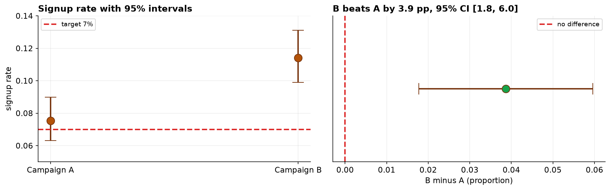

Rates are everywhere in business: conversion rates, click rates, defect rates, churn. They look like averages, and in a sense they are, but the outcome behind them is binary, one or zero for each person. That changes the arithmetic of the standard error and gives this family its own tests.
Two questions, two different verdicts. Campaign A came in at 7.54% against a 7% target, but that gap is not distinguishable from noise (p = 0.41, 95% CI 6.3% to 9.0%, which contains 7%). Campaign B at 11.41% clearly beats A (p = 0.0003, +3.87 percentage points, CI +1.8 to +6.0). The same dataset answers one question decisively and the other not at all.
Two Questions, Two Tests
Two email campaigns ran at the same time and every visitor saw exactly one. Marketing asked two things, and they are genuinely different questions requiring different tests.
The distinction is not cosmetic. In the one-sample test the target is a fixed number chosen by the business, so only the observed rate wobbles. In the two-sample test both rates are estimates, so the comparison must carry both sources of uncertainty.
Clean, Then Check the Assumption
Only two fixes are needed here: drop duplicate rows, and drop visitors whose outcome was never recorded. A missing outcome must not be quietly counted as a non-signup, because we do not know that it was one.
Both proportion tests rest on a normal approximation to the binomial, which needs enough events and enough non-events, conventionally at least 10 of each. With well over a thousand visitors per campaign and 113 and 171 signups, that condition is met with enormous margin.
| Campaign | Signups | Visitors | Rate | Successes / failures |
|---|---|---|---|---|
| A | 113 | 1,499 | 7.54% | 113 / 1,386 ✓ |
| B | 171 | 1,499 | 11.41% | 171 / 1,328 ✓ |
Question 1: Did A Beat the 7% Target?
Campaign A converted at 7.54%, which is numerically above the 7% target. It is tempting to stop there and report a win.
The test cannot distinguish 7.54% from 7%. The confidence interval runs from 6.3% to 9.0% and comfortably contains the target, so the data are equally consistent with A running slightly below target as slightly above it. The exact binomial test agrees (p = 0.42), confirming this is not an artifact of the normal approximation.
The honest statement is not "A beat its target" and not "A missed its target". It is "A is running at about its target, and this sample cannot tell us which side of it". Reporting a win from a 7.54% observation would be reading noise as signal, and "not significant" here means inconclusive, not no difference.
Question 2: Does B Beat A?
The second question uses the same dataset and gets a completely different quality of answer.

Why did the same data answer one question and not the other? Because of the size of the gap being asked about. Question 1 was about a 0.54 point difference; question 2 was about a 3.87 point difference, seven times larger, from the same number of visitors.
The Same Win, Two Very Different Headlines
The gap between the campaigns can be reported as 3.87 percentage points or as a 51% relative lift. Both are arithmetically correct, and they leave completely different impressions.
Relative figures inflate when the base rate is small, and a 7.5% base rate is small. The reporting discipline from Chapter 157 applies directly: give the absolute difference with its interval, then translate it into something concrete, here about 387 extra signups per 10,000 visitors. Quote the relative lift alongside if you like, never instead.
The Verdict and Its Limits
If the decision is which campaign to run, the evidence supports B. If the question is whether A meets its 7% target, the answer is that we cannot yet tell, and a larger sample would be needed to resolve it.
- How were visitors assigned? The comparison is causal only if visitors were randomized between campaigns. If A and B ran on different pages, days, or audiences, the difference confounds the campaign with those factors, the same failure mode as in Capstone 2.
- Signups are not the goal. A campaign can lift signups by promising more than the product delivers, moving the cost downstream into churn and support. Optimizing one funnel metric without watching what follows is how a short-term win becomes a long-term loss.
- Peeking inflates false positives. Checking an experiment repeatedly and stopping the moment p drops below 0.05 badly breaks the error rate. Fix the sample size in advance, or use a sequential method that accounts for the looking.
- Inconclusive is not negative. Campaign A's result does not show that A is at target; it shows the study could not resolve the question at this sample size.
Proportion Tests in Data Science & AI
Binary outcomes are the most common outcome type in product analytics, so this is probably the most-run test in the industry.
| Where it appears | The proportion |
|---|---|
| Conversion A/B tests | Share of users who complete a target action, variant against control. |
| Model accuracy comparison | Share correct for two classifiers on the same held-out set. |
| Quality and defect rates | Share of units failing inspection, against a contractual threshold. |
| Fairness metrics | Selection rates compared across groups, as in Chapter 158. |
Two habits separate reliable experimentation teams from unreliable ones. First, a power calculation before launch: deciding the minimum lift worth detecting and sizing the test for it, which would have revealed in advance that this sample could never resolve a 0.5-point question. Second, no peeking: fixing the horizon or adopting a sequential design. Both failures produce confident conclusions from tests that never had the resolution to support them.
The full project, step by step
The companion notebook works both questions end to end: it cleans the visitor log with a printed audit trail, checks the successes-and-failures condition for each campaign, runs the one-sample z-test against the target with a Wilson confidence interval and confirms it with an exact binomial test, runs the two-sample z-test with a confidence interval for the difference, and computes both the absolute and relative framings of the lift. Every number here comes from its output, with a plain-language note after each result.
The dataset (capstone-email-signup-rates.xlsx) holds one row
per visitor on the visitors sheet, with duplicates and missing outcomes left in so you can practice the
cleaning. Two written reports accompany it: a plain-language brief for a marketing lead, and a
technical report with both tests, intervals, the exact-binomial check, and references.
🎓 Key Takeaways
- ✓A binary outcome averaged over people is a proportion, and proportions have their own standard error and their own tests.
- ✓One-sample compares a rate to a fixed target (only one quantity is uncertain); two-sample compares two estimated rates (both are).
- ✓Check successes and failures, at least about 10 of each; below that use the exact binomial test, which here confirmed the approximation.
- ✓Not significant means inconclusive: A at 7.54% with a CI of 6.3% to 9.0% is neither above nor below its 7% target, and reporting a win would read noise as signal.
- ✓Report absolute, then translate: +3.87 pp (CI +1.8 to +6.0), about 387 extra signups per 10,000 visitors. The same result framed as "+51%" overstates it.
Quiz: Test Yourself
Eight questions on this capstone, from the assumption check to the framing of the lift. Answer them, hit Check Answers, and keep refining until you score 100%. Your progress is saved.